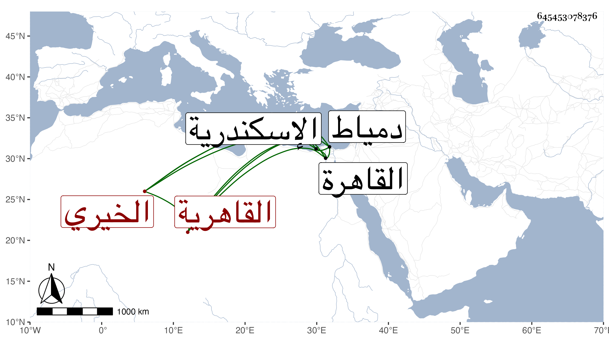

0902Sakhawi.DawLamic.ITO20230111-ara1.EIS1600.645453078376
Biography ID: 645453078376
844
رجب بن يوسف بن سليمان زين الدين القاهرية الخيري بفتح المعجمة ثم تحتانية ساكنة نسبة للجمال بن خير المالكي لكونه كان في خدمته . ولد تقريبا قبل السبعين وسبعمائة ورأيت بخطه مولدي بأخبار أبي سنة خمس وستين وسبعمائة بالقاهرة . ونشأ بها فحفظ القرآن والرسالة في فقه المالكية ، واستفاد من مخدومه وغيره أشياء حسنة كان يذاكر بها ويحفظ نبذا من التاريخ وسافر إلى اسكندرية ودمياط مرارا ، وسمع الكثير على التقي بن حاتم والمليجي والشهاب المنفر والعلاء بن السبع وابن الفصيح وابن الشيخة والتنوخي والمطرز والصردي والنجم البالسي والفرسيسي والبلقيني والعراقي والهيثمي والغماري والمجد الحنفي وناصر الدين نصر الله الكناني الحنبلي والفخر القاياتي وابن الشهيد وأكثر من الشيوخ والمسموع وأجاز له خلق ، وحدث سمع منه الفضلاء أخذت عنه أشياء ، وقد ذكره شيخي في سنة أربع وعشرين من تاريخه وقال انه كان يخدم ابن خير ثم صار بعده يستجدي من الطلبة ويرافقهم في الطلب والسماع فسمع شيئا كثيرا ، لكنه كان يزن بالهنات ولا يزال يحصل في مكروه من ذلك إلى أن وقعت له كائنة ، وذكرها وهي شنيعة ما أحببت ذكرها ، قال فكانت أشد شيء اتفق له وعاش بعدها دهرا . قلت وحسنت حاله وتاب وأناب ولازم خدمة ابن عمار وتعاطى حوائجه وقتا ، وحصل اليسير من الكتب ، وصار متماسك الأمر بحيث أخذ عنه غير واحد من الأعيان مع ظرف ورغبة في الجماعات ومحبة في زيارة الصالحين حتى كان أحد خدام الليث . مات في شعبان سنة خمسين بعد أن تعلل قليلا ونزل بالبيمارستان المنصوري ثم خرج إلى الظاهرية القديمة فكانت منيته بها واختلست دريهماته من وسطه عفا الله عنه .
